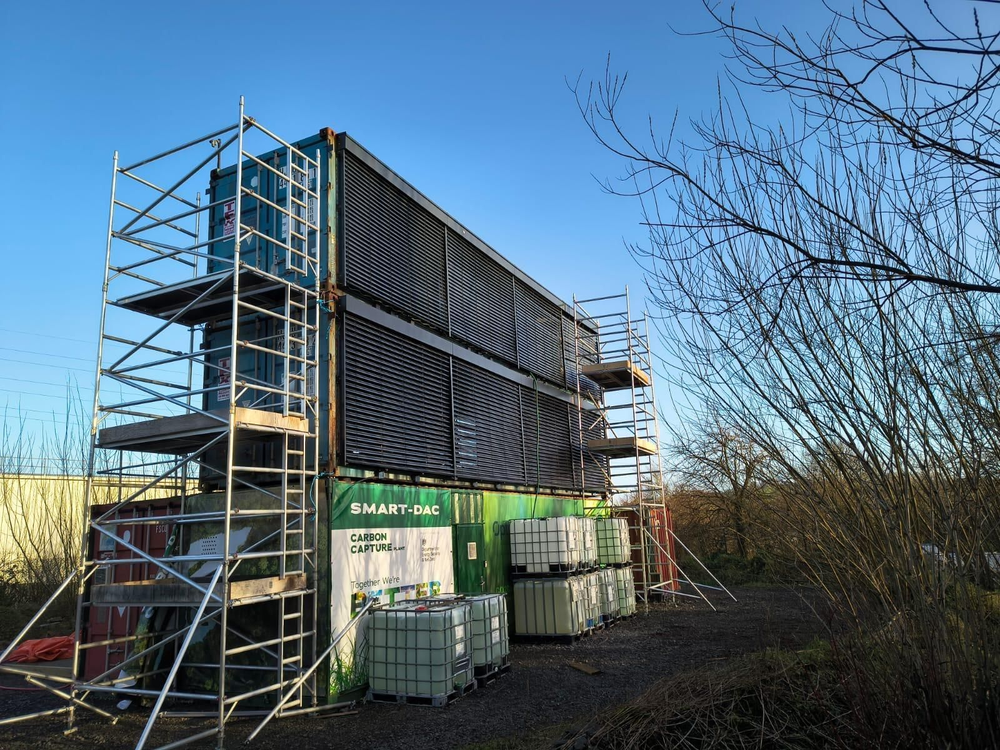
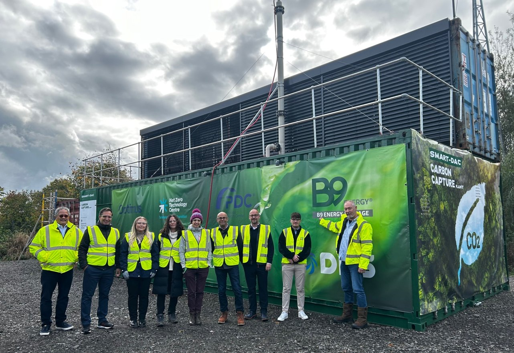

Green CO2, captured from the wind,
produced where you need it.
Direct Air Capture (DAC) powered by wind and a modest amount of electricity.
Tested and proven in Northern Ireland from late 2023 to early 2025, including through Storm Darragh.
- 1.5 yearsin operation
- 25 tonnesCO2 captured
- 80%of the time in operation
To bring the CO2 concentration in the atmosphere down, you have to take CO2 out of the air.
The world emits around 40 gigatonnes of CO2 a year (IEA, Global Carbon Budget). Nature absorbs only half, so the concentration in the atmosphere keeps rising. About half of our emissions come from point sources such as power plants and factories. The other half comes from small, scattered sources: farms, transport, homes. Those are hard to capture at the source. Bringing the concentration down therefore means taking CO2 out of the air, and putting it to use in processes and products as a replacement for fossil carbon.
The challenge in direct air capture is cost and energy. Many technologies need electricity for fans and heat to release the CO2 from the capture material. Add the scale most of them need, and DAC is perceived as expensive compared with point-source capture and with fossil or grey CO2.
SMART-DAC by CO2CirculAir takes a different route: lower cost, lower energy, simpler to operate. Membrane technology with a water-based absorbent captures CO2 from the wind and releases it again as pure CO2, using only renewable electricity. It captures and produces efficiently, and delivers a green carbon feedstock. That brings the cost of CO2 from air closer to point-source capture, on the way to the price of grey CO2.
- 2024€450per tonne · 2.5 kWh/kg
- 2026€300per tonne · 2.0 kWh/kg
- 2028€200per tonne · 1.5 kWh/kg
- After 2030< €150per tonne · < 1.5 kWh/kg
3 steps: No fans, no heat, no pressure.
-
CO2 capture: membrane gas absorption
The wind carries air through an open container. Inside hang hollow-fibre membrane bundles, with a water-based, non-toxic absorbent flowing through them. CO2 passes through the membrane wall and dissolves in the liquid.
Under 0.2 kWh per kg, only for pumping the absorbent through the membranes -
CO2 release: membrane electrodialysis
Electrodialysis uses electricity to release the CO2 from the absorbent again, as very pure CO2 (99.5 percent). The absorbent goes back to capturing. No heat and no chemicals needed, only electricity from renewable sources such as wind and solar.
About 1.5 kWh per kg -
Buffer
Buffer tanks between the two steps give maximum flexibility. Capture operates day and night, because it needs little electricity and the membranes are always in the wind. Release can run around the clock too, but can also follow demand: when electricity is available, cheap or green, or when a customer needs the CO2.
24/7, or produce on demand
The CO2 produced is 99.5 percent pure, just above atmospheric pressure and ready to use. Basically, SMART-DAC is a simple water treatment technology: no pressure, no fans, no compressors. Switch it off, and nothing happens.
From one container to hundreds.
The membranes are located in a container. One 40-foot container captures around 200 tonnes of CO2 a year, enough to produce 175 cubic metres of e-methanol. Containers are placed and stacked facing the prevailing wind. A farmer with one wind turbine can start with a single small installation. A grower can size an installation to the CO2 demand of the crops. The containers can easily be stacked. A large wind park adds as many containers as it needs.
This flexibility also solves a problem for producers of renewable electricity: make CO2 at the moment the electricity is there, for example during grid congestion or overcapacity. The turbines keep running at full output, and every kilogram of CO2 makes optimum use of them.

CO2 is a valuable product, not something that only affects the climate. Too pure to put underground.
Produced at 99.5 percent purity, on the site where it is used. No transport, no storage, no logistics in between.
-
Feedstock for CO2 fuels (e-fuels)
Combined with green hydrogen, our CO2 is the feedstock for e-methanol: fuel for ships, fishing vessels and tractors. And for other CO2 fuels, for example e-SAF, sustainable aviation fuel. With a renewable electricity supplier, a hydrogen unit and a fuel synthesis unit, SMART-DAC completes a fuel chain that fits on one site, also at small scale.
-
Direct use in greenhouses
Growers dose CO2 to raise yields during daylight hours. In the Netherlands, greenhouses receive CO2 through the OCAP pipeline, captured from industry. SMART-DAC CO2 can replace it with CO2 that is 100 percent green: captured from the atmosphere at the greenhouse, produced when it is needed.
-
Feedstock for green chemicals and materials
A green carbon feedstock for plastics, building materials and other carbon-based products. Not only the CO2 itself: the CO2-loaded absorbent can serve as a feedstock for manufacturing these products too.
-
Direct use in food, beverage and manufacturing
Replacing fossil CO2 in existing markets, from beverages to industrial processes. A SMART-DAC installation delivers CO2 on demand, matched to consumption.
Tested and proven in Northern Ireland
(end 2023-early 2025)
The pilot was built and operated at B9 Energy near Larne, in a programme funded by the UK Department for Energy Security and Net Zero (DESNZ). Read the DESNZ final report.
- 1.5 yearsin operation
- 25 tonnesCO2 captured
- 80%of the time in operation, even during storm
- 99.5%purity
The membranes came through Storm Darragh in December 2024, with wind speeds above 70 miles per hour, without loss of performance or damage. The plant operated reliably, restarted automatically after shutdowns and kept operating through frost.
Technology Readiness Level 6 today, with a short route to level 8 once a first customer is on board.
Patent published: EP 4 477 292 A1 and WO 2024/256349 A1.

Developed by membrane specialists,
built by process engineers.
CO2CirculAir was founded by membrane specialists, among them former researchers at TNO, the Netherlands Organisation for Applied Scientific Research, to bring membrane technology to direct air capture. Three years of development were followed by a two-year pilot programme, with 1.5 years in operation. The next step is a demonstration plant with a first customer, preferably in e-fuels, and specifically e-methanol for shipping.